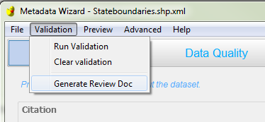
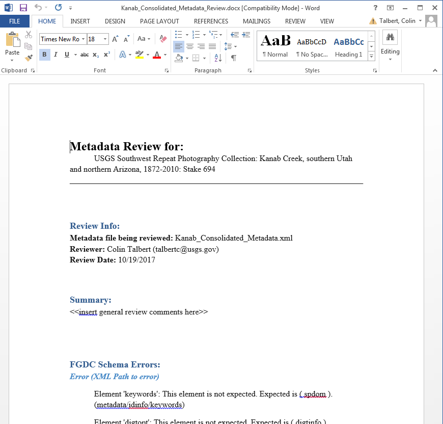

Making a Metadata Review Report¶
Many metadata vetting workflows require the creation of a review report that documents issues identified in the record. The Metadata Wizard includes a metadata report builder that creates a review report in Microsoft Word (.docx) format. This report will be saved into the same directory that contains the metadata file (.xml) currently open. The output will be named identically as the .xml file, but with ‘.xml’ replaced with ‘_Review.docx’
Information included in the report:
- The metadata file being reviewed
- The person conducting the review
- The date the report was created
- A section for general or summary comments
- A list of FGDC errors encountered during validation
- The HTML version of the complete metadata record
This report is generated by clicking the Generate Review Doc option in the Validation menu.

Once generated, the report opens in the default application for .docx files, typically Microsoft Word. The document can then be checked over for spelling errors and other issues. Comments, clarifications, and suggestions can be added at this time.

For details on how to perform a comprehensive metadata review, please see the Metadata section of the USGS Data Management website.